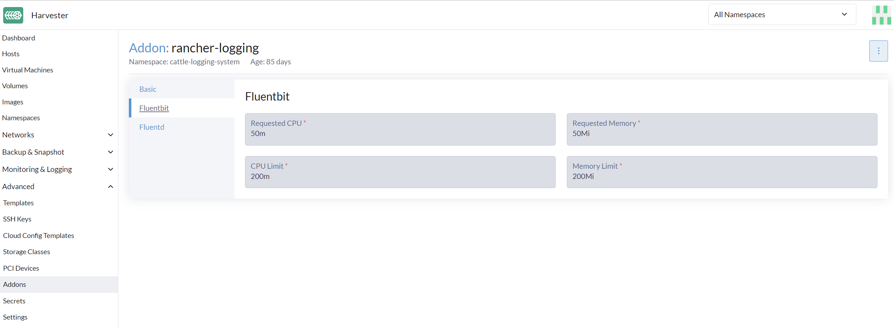

|
本文档采用自动化机器翻译技术翻译。 尽管我们力求提供准确的译文，但不对翻译内容的完整性、准确性或可靠性作出任何保证。 若出现任何内容不一致情况，请以原始 英文 版本为准，且原始英文版本为权威文本。 |
日志记录
了解在`Harvester Cluster`中发生/已经发生的事情是很重要的。
Harvester`在集群启动后立即收集`cluster running log、kubernetes `audit`和`event`日志，这对于监控、记录、审计和故障排除非常有帮助。
`Harvester`支持将这些日志发送到各种类型的日志服务器。
|
日志数据的大小与集群规模、工作负载和其他因素有关。`Harvester`不使用持久存储在集群内部存储日志数据。用户需要设置日志服务器以相应地接收日志。 |
日志功能现在通过一个附加产品实现，并在新安装中默认禁用。
用户可以在安装后通过Harvester UI启用/禁用`rancher-logging` 附加产品。
用户还可以通过自定义配置文件在他们的Harvester安装中启用/禁用`rancher-logging`附加产品。
对于从版本v1.1.x升级的Harvester集群，日志功能会自动转换为附加产品，并保持启用状态。
高级体系结构
Harvester和Rancher都使用 日志操作员来管理内部日志基础设施的特定组件和操作。

在Harvester的实践中，Logging、`Audit`和`Event`共享一个架构，`Logging`是基础设施，而`Audit`和`Event`则在其之上。
日志记录
Harvester日志基础设施允许您将Harvester日志聚合到外部服务中，例如 Graylog、 Elasticsearch、 Splunk、 Grafana Loki等。
收集的日志
请参见下面收集的日志列表：
-
来自所有集群的日志`Pods`
-
来自每个`node`的内核日志
-
来自每个节点的选定systemd服务的日志
-
rke2-server -
rke2-agent -
rancherd -
rancher-system-agent -
NetworkManager -
iscsid
-
|
用户能够配置和修改聚合日志的发送位置，以及一些基本的过滤。不支持更改收集哪些日志。 |
配置日志资源
在日志操作员下方是 Fluentd 和 Fluent Bit，它们负责日志收集和路由。如果需要，您可以修改分配给这些组件的资源数量。
从用户界面
-
转到 高级 > 附加产品 页面并选择 rancher-logging 附加产品。
-
在 Fluentbit 标签下，修改资源请求和限制。
-
在 Fluentd 标签下，修改资源请求和限制。
-
配置完 rancher-logging 附加产品的设置后，选择 保存。

|
只有在启用 rancher-logging 附加产品时，用户界面配置才可见。 |
从命令行界面
您可以使用以下 kubectl 命令来更改 rancher-logging 附加产品的资源配置： kubectl edit addons.harvesterhci.io -n cattle-logging-system rancher-logging。
资源路径和默认值如下。
apiVersion: harvesterhci.io/v1beta1
kind: Addon
metadata:
name: rancher-logging
namespace: cattle-logging-system
spec:
valuesContent: |
fluentbit:
resources:
limits:
cpu: 200m
memory: 200Mi
requests:
cpu: 50m
memory: 50Mi
fluentd:
resources:
limits:
cpu: 1000m
memory: 800Mi
requests:
cpu: 100m
memory: 200Mi
|
即使在附加产品禁用时，您仍然可以进行配置调整。但是，这些更改仅在您重新启用附加产品时生效。 |
配置日志目标
在将新的 Outputs 和 Flows 应用到集群时，日志操作员可能需要一些时间才能有效应用它们。因此，请允许几分钟时间以便日志开始流动。
集群与命名空间
路由日志时需要理解的一件重要事情是 ClusterFlow 与 Flow 以及 ClusterOutput 与 Output 之间的区别。每个的集群版本和非集群版本之间的主要区别在于，非集群版本是名称空间的。
这最大的影响是 Flows 只能访问同一名称空间内的 Outputs，但仍然可以访问任何 ClusterOutput。
有关更多信息，请参见文档：
从用户界面
|
UI 图像适用于 |
创建输出
-
选择创建新的
Output或ClusterOutput的选项。 -
如果创建
Output，请选择所需的名称空间。 -
为资源添加名称。
-
选择日志类型。
-
选择日志输出类型。

-
如有必要，请配置输出缓冲区。

-
添加任何标签或注释。

-
完成后，点击
Create在右下角。
|
根据所选输出（Splunk、Elasticsearch等），表单中将有额外的字段需要指定。 |
输出
表单显示所选 输出可用的字段。
输出缓冲区
编辑器允许您使用各种 字段描述首选的输出缓冲区行为。
创建流程
-
选择创建新的
Flow或ClusterFlow的选项。 -
如果创建`Flow`，请选择所需的名称空间。
-
为资源添加名称。
-
选择要包含或排除其日志的节点。

-
选择目标`Outputs`和`ClusterOutputs`。

-
如有需要，添加任何过滤器。

-
完成后，点击`Create`在左下角。
匹配
匹配项允许您过滤要包含在`Flow`中的日志。该表单仅允许您包含或排除节点日志，但如有需要，您可以通过选择`Edit as YAML`添加资源支持的其他匹配规则。
有关匹配指令的更多信息，请参见 匹配语句。
输出
输出允许您选择一个或多个`OutputRefs`以将聚合日志发送到。在创建或编辑 Flow / ClusterFlow 时，用户必须至少选择一个 Output。
|
必须至少有一个现有的 |
过滤器
过滤器允许您转换、处理和变更日志。有关更多信息，请参见支持的 过滤器 列表。
从命令行界面
要通过命令行配置日志路由，您只需定义相关资源的 YAML 文件：
# elasticsearch-logging.yaml
apiVersion: logging.banzaicloud.io/v1beta1
kind: Output
metadata:
name: elasticsearch-example
namespace: fleet-local
labels:
example-label: elasticsearch-example
annotations:
example-annotation: elasticsearch-example
spec:
elasticsearch:
host: <url-to-elasticsearch-server>
port: 9200
---
apiVersion: logging.banzaicloud.io/v1beta1
kind: Flow
metadata:
name: elasticsearch-example
namespace: fleet-local
spec:
match:
- select: {}
globalOutputRefs:
- elasticsearch-example然后应用它们：
kubectl apply -f elasticsearch-logging.yaml引用机密
您可以使用以下任一方法定义机密值（YAML 格式）：
最简单的方法是使用 value 键，它是所需机密的简单字符串值。此方法仅应在测试中使用，绝不应在生产中使用：
aws_key_id:
value: "secretvalue"接下来是使用 valueFrom，它允许通过名称和键对引用机密中的特定值：
aws_key_id:
valueFrom:
secretKeyRef:
name: <kubernetes-secret-name>
key: <kubernetes-secret-key>某些插件需要从文件中读取，而不是仅仅接收机密中的值（这通常适用于 CA 证书文件）。在这些情况下，您需要使用 mountFrom，它将机密作为文件挂载到底层 fluentd 部署，并将插件指向该文件。valueFrom 和 mountFrom 对象看起来相同：
tls_cert_path:
mountFrom:
secretKeyRef:
name: <kubernetes-secret-name>
key: <kubernetes-secret-key>有关更多信息，请参见 机密定义。
示例 Outputs
-
Elasticsearch
-
Graylog
-
Splunk
-
Loki
对于最简单的部署，您可以使用 docker 在本地系统上部署 Elasticsearch：
sudo docker run --name elasticsearch -p 9200:9200 -p 9300:9300 -e xpack.security.enabled=false -e node.name=es01 -e discovery.type=single-node -it docker.elastic.co/elasticsearch/elasticsearch:8.16.6|
要使用 SUSE Virtualization v1.5.0，确保 Elasticsearch 服务器运行版本 8.11.0 或更高版本。 当 |
确保您已将 vm.max_map_count 设置为 >= 262144，否则上述 docker 命令将失败。一旦 Elasticsearch 服务器启动，您可以为 ClusterOutput 和 ClusterFlow 创建 yaml 文件：
cat << EOF > elasticsearch-example.yaml
apiVersion: logging.banzaicloud.io/v1beta1
kind: ClusterOutput
metadata:
name: elasticsearch-example
namespace: cattle-logging-system
spec:
elasticsearch:
host: 192.168.0.119
port: 9200
buffer:
timekey: 1m
timekey_wait: 30s
timekey_use_utc: true
---
apiVersion: logging.banzaicloud.io/v1beta1
kind: ClusterFlow
metadata:
name: elasticsearch-example
namespace: cattle-logging-system
spec:
match:
- select: {}
globalOutputRefs:
- elasticsearch-example
EOF并应用该文件：
kubectl apply -f elasticsearch-example.yaml在允许日志操作员应用资源后，您可以测试日志是否正在流动：
$ curl localhost:9200/fluentd/_search
{
"took": 1,
"timed_out": false,
"_shards": {
"total": 5,
"successful": 5,
"skipped": 0,
"failed": 0
},
"hits": {
"total": 11603,
"max_score": 1,
"hits": [
{
"_index": "fluentd",
"_type": "fluentd",
"_id": "yWHr0oMBXcBggZRJgagY",
"_score": 1,
"_source": {
"stream": "stderr",
"logtag": "F",
"message": "I1013 02:29:43.020384 1 csi_handler.go:248] Attaching \"csi-974b4a6d2598d8a7a37b06d06557c428628875e077dabf8f32a6f3aa2750961d\"",
"kubernetes": {
"pod_name": "csi-attacher-5d4cc8cfc8-hd4nb",
"namespace_name": "longhorn-system",
"pod_id": "c63c2014-9556-40ce-a8e1-22c55de12e70",
"labels": {
"app": "csi-attacher",
"pod-template-hash": "5d4cc8cfc8"
},
"annotations": {
"cni.projectcalico.org/containerID": "857df09c8ede7b8dee786a8c8788e8465cca58f0b4d973c448ed25bef62660cf",
"cni.projectcalico.org/podIP": "10.52.0.15/32",
"cni.projectcalico.org/podIPs": "10.52.0.15/32",
"k8s.v1.cni.cncf.io/network-status": "[{\n \"name\": \"k8s-pod-network\",\n \"ips\": [\n \"10.52.0.15\"\n ],\n \"default\": true,\n \"dns\": {}\n}]",
"k8s.v1.cni.cncf.io/networks-status": "[{\n \"name\": \"k8s-pod-network\",\n \"ips\": [\n \"10.52.0.15\"\n ],\n \"default\": true,\n \"dns\": {}\n}]",
"kubernetes.io/psp": "global-unrestricted-psp"
},
"host": "harvester-node-0",
"container_name": "csi-attacher",
"docker_id": "f10e4449492d4191376d3e84e39742bf077ff696acbb1e5f87c9cfbab434edae",
"container_hash": "sha256:03e115718d258479ce19feeb9635215f98e5ad1475667b4395b79e68caf129a6",
"container_image": "docker.io/longhornio/csi-attacher:v3.4.0"
}
}
},
...
]
}
}apiVersion: logging.banzaicloud.io/v1beta1
kind: ClusterFlow
metadata:
name: "all-logs-gelf-hs"
namespace: "cattle-logging-system"
spec:
globalOutputRefs:
- "example-gelf-hs"
---
apiVersion: logging.banzaicloud.io/v1beta1
kind: ClusterOutput
metadata:
name: "example-gelf-hs"
namespace: "cattle-logging-system"
spec:
gelf:
host: "192.168.122.159"
port: 12202
protocol: "udp"apiVersion: logging.banzaicloud.io/v1beta1
kind: ClusterOutput
metadata:
name: harvester-logging-splunk
namespace: cattle-logging-system
spec:
splunkHec:
hec_host: 192.168.122.101
hec_port: 8088
insecure_ssl: true
index: harvester-log-index
hec_token:
valueFrom:
secretKeyRef:
key: HECTOKEN
name: splunk-hec-token2
buffer:
chunk_limit_size: 3MB
timekey: 2m
timekey_wait: 1m
---
apiVersion: logging.banzaicloud.io/v1beta1
kind: ClusterFlow
metadata:
name: harvester-logging-splunk
namespace: cattle-logging-system
spec:
filters:
- tag_normaliser: {}
match:
globalOutputRefs:
- harvester-logging-splunk您可以按照 logging HEP中的说明通过 Grafana Loki部署和查看集群日志。
apiVersion: logging.banzaicloud.io/v1beta1
kind: ClusterFlow
metadata:
name: harvester-loki
namespace: cattle-logging-system
spec:
match:
- select: {}
globalOutputRefs:
- harvester-loki
---
apiVersion: logging.banzaicloud.io/v1beta1
kind: ClusterOutput
metadata:
name: harvester-loki
namespace: cattle-logging-system
spec:
loki:
url: http://loki-stack.cattle-logging-system.svc:3100
extra_labels:
logOutput: harvester-lokiAudit
Harvester收集Kubernetes `audit`并能够将`audit`发送到各种类型的日志服务器。
指导`kube-apiserver`的策略文件是 这里。
审计定义
在`kubernetes`中， 审计数据由`kube-apiserver`根据定义的策略生成。
... Audit policy Audit policy defines rules about what events should be recorded and what data they should include. The audit policy object structure is defined in the audit.k8s.io API group. When an event is processed, it's compared against the list of rules in order. The first matching rule sets the audit level of the event. The defined audit levels are: None - don't log events that match this rule. Metadata - log request metadata (requesting user, timestamp, resource, verb, etc.) but not request or response body. Request - log event metadata and request body but not response body. This does not apply for non-resource requests. RequestResponse - log event metadata, request and response bodies. This does not apply for non-resource requests.
审计日志格式
Kubernetes中的审计日志格式
Kubernetes apiserver以以下JSON格式将审计日志记录到本地文件中。
{
"kind":"Event",
"apiVersion":"audit.k8s.io/v1",
"level":"Metadata",
"auditID":"13d0bf83-7249-417b-b386-d7fc7c024583",
"stage":"RequestReceived",
"requestURI":"/apis/flowcontrol.apiserver.k8s.io/v1beta2/prioritylevelconfigurations?fieldManager=api-priority-and-fairness-config-producer-v1",
"verb":"create",
"user":{"username":"system:apiserver","uid":"d311c1fe-2d96-4e54-a01b-5203936e1046","groups":["system:masters"]},
"sourceIPs":["::1"],
"userAgent":"kube-apiserver/v1.24.7+rke2r1 (linux/amd64) kubernetes/e6f3597",
"objectRef":{"resource":"prioritylevelconfigurations",
"apiGroup":"flowcontrol.apiserver.k8s.io",
"apiVersion":"v1beta2"},
"requestReceivedTimestamp":"2022-10-19T18:55:07.244781Z",
"stageTimestamp":"2022-10-19T18:55:07.244781Z"
}审计日志输出/集群输出
要输出与审计相关的日志，Output/ClusterOutput`要求`loggingRef`的值为`harvester-kube-audit-log-ref。
当您从Harvester仪表板进行配置时，字段会自动添加。
从`Audit Only`下拉列表中选择类型`Type`。

当您从CLI进行配置时，请手动添加字段。
示例：
apiVersion: logging.banzaicloud.io/v1beta1
kind: ClusterOutput
metadata:
name: "harvester-audit-webhook"
namespace: "cattle-logging-system"
spec:
http:
endpoint: "http://192.168.122.159:8096/"
open_timeout: 3
format:
type: "json"
buffer:
chunk_limit_size: 3MB
timekey: 2m
timekey_wait: 1m
loggingRef: harvester-kube-audit-log-ref # this reference is fixed and must be here
审计日志流/集群流
要路由与审计相关的日志，Flow/ClusterFlow`需要`loggingRef`的值为`harvester-kube-audit-log-ref。
当您从Harvester仪表板进行配置时，字段会自动添加。
选择类型`Audit`。

当您从CLI进行配置时，请手动添加字段。
示例：
apiVersion: logging.banzaicloud.io/v1beta1
kind: ClusterFlow
metadata:
name: "harvester-audit-webhook"
namespace: "cattle-logging-system"
spec:
globalOutputRefs:
- "harvester-audit-webhook"
loggingRef: harvester-kube-audit-log-ref # this reference is fixed and must be here
活动
Harvester收集Kubernetes `event`并能够将`event`发送到各种类型的日志服务器。
事件定义
Kubernetes `events`是显示集群内部发生情况的对象，例如调度程序做出的决策或某些Pod为何被驱逐出节点。所有核心组件和扩展（操作员/控制器）可以通过API服务器创建事件。
事件与各个组件生成的日志消息没有直接关系，并且不受日志详细程度的影响。当组件创建事件时，它通常会发出相应的日志消息。事件在短时间内（通常在一小时后）由API服务器进行垃圾回收，这意味着它们可以用来理解正在发生的问题，但您必须收集它们以调查过去的事件。
当某些事情未按预期工作时，事件是查看应用程序和基础设施操作的第一件事。如果故障是早期事件的结果，或者在进行事后分析时，保留它们更长时间是至关重要的。
事件日志格式
Kubernetes中的事件日志格式
一个`kubernetes event`示例：
{
"apiVersion": "v1",
"count": 1,
"eventTime": null,
"firstTimestamp": "2022-08-24T11:17:35Z",
"involvedObject": {
"apiVersion": "kubevirt.io/v1",
"kind": "VirtualMachineInstance",
"name": "vm-ide-1",
"namespace": "default",
"resourceVersion": "604601",
"uid": "1bd4133f-5aa3-4eda-bd26-3193b255b480"
},
"kind": "Event",
"lastTimestamp": "2022-08-24T11:17:35Z",
"message": "VirtualMachineInstance defined.",
"metadata": {
"creationTimestamp": "2022-08-24T11:17:35Z",
"name": "vm-ide-1.170e43cbdd833b62",
"namespace": "default",
"resourceVersion": "604626",
"uid": "0114f4e7-1d4a-4201-b0e5-8cc8ede202f4"
},
"reason": "Created",
"reportingComponent": "",
"reportingInstance": "",
"source": {
"component": "virt-handler",
"host": "harv1"
},
"type": "Normal"
},
发送到日志服务器之前的事件日志格式
每个`event log`的格式为：{"stream":"","logtag":"F","message":"","kubernetes":{""}}。kubernetes event 在 message 字段中。
{
"stream":"stdout",
"logtag":"F",
"message":"{
\\"verb\\":\\"ADDED\\",
\\"event\\":{\\"metadata\\":{\\"name\\":\\"vm-ide-1.170e446c3f890433\\",\\"namespace\\":\\"default\\",\\"uid\\":\\"0b44b6c7-b415-4034-95e5-a476fcec547f\\",\\"resourceVersion\\":\\"612482\\",\\"creationTimestamp\\":\\"2022-08-24T11:29:04Z\\",\\"managedFields\\":[{\\"manager\\":\\"virt-controller\\",\\"operation\\":\\"Update\\",\\"apiVersion\\":\\"v1\\",\\"time\\":\\"2022-08-24T11:29:04Z\\"}]},\\"involvedObject\\":{\\"kind\\":\\"VirtualMachineInstance\\",\\"namespace\\":\\"default\\",\\"name\\":\\"vm-ide-1\\",\\"uid\\":\\"1bd4133f-5aa3-4eda-bd26-3193b255b480\\",\\"apiVersion\\":\\"kubevirt.io/v1\\",\\"resourceVersion\\":\\"612477\\"},\\"reason\\":\\"SuccessfulDelete\\",\\"message\\":\\"Deleted PodDisruptionBudget kubevirt-disruption-budget-hmmgd\\",\\"source\\":{\\"component\\":\\"disruptionbudget-controller\\"},\\"firstTimestamp\\":\\"2022-08-24T11:29:04Z\\",\\"lastTimestamp\\":\\"2022-08-24T11:29:04Z\\",\\"count\\":1,\\"type\\":\\"Normal\\",\\"eventTime\\":null,\\"reportingComponent\\":\\"\\",\\"reportingInstance\\":\\"\\"}
}",
"kubernetes":{"pod_name":"harvester-default-event-tailer-0","namespace_name":"cattle-logging-system","pod_id":"d3453153-58c9-456e-b3c3-d91242580df3","labels":{"app.kubernetes.io/instance":"harvester-default-event-tailer","app.kubernetes.io/name":"event-tailer","controller-revision-hash":"harvester-default-event-tailer-747b9d4489","statefulset.kubernetes.io/pod-name":"harvester-default-event-tailer-0"},"annotations":{"cni.projectcalico.org/containerID":"aa72487922ceb4420ebdefb14a81f0d53029b3aec46ed71a8875ef288cde4103","cni.projectcalico.org/podIP":"10.52.0.178/32","cni.projectcalico.org/podIPs":"10.52.0.178/32","k8s.v1.cni.cncf.io/network-status":"[{\\n \\"name\\": \\"k8s-pod-network\\",\\n \\"ips\\": [\\n \\"10.52.0.178\\"\\n ],\\n \\"default\\": true,\\n \\"dns\\": {}\\n}]","k8s.v1.cni.cncf.io/networks-status":"[{\\n \\"name\\": \\"k8s-pod-network\\",\\n \\"ips\\": [\\n \\"10.52.0.178\\"\\n ],\\n \\"default\\": true,\\n \\"dns\\": {}\\n}]","kubernetes.io/psp":"global-unrestricted-psp"},"host":"harv1","container_name":"harvester-default-event-tailer-0","docker_id":"455064de50cc4f66e3dd46c074a1e4e6cfd9139cb74d40f5ba00b4e3e2a7ab2d","container_hash":"docker.io/banzaicloud/eventrouter@sha256:6353d3f961a368d95583758fa05e8f4c0801881c39ed695bd4e8283d373a4262","container_image":"docker.io/banzaicloud/eventrouter:v0.1.0"}
}
事件日志流/集群流
与正常的日志记录 Flow/ClusterFlow 相比，Event 相关的 Flow/ClusterFlow 多了一个匹配字段，其值为 event-tailer。
当您从Harvester仪表板进行配置时，字段会自动添加。
从 Event 下拉列表中选择 Type。
当您从CLI进行配置时，请手动添加字段。
示例：
apiVersion: logging.banzaicloud.io/v1beta1
kind: ClusterFlow
metadata:
name: harvester-event-webhook
namespace: cattle-logging-system
spec:
filters:
- tag_normaliser: {}
match:
- select:
labels:
app.kubernetes.io/name: event-tailer
globalOutputRefs:
- harvester-event-webhook